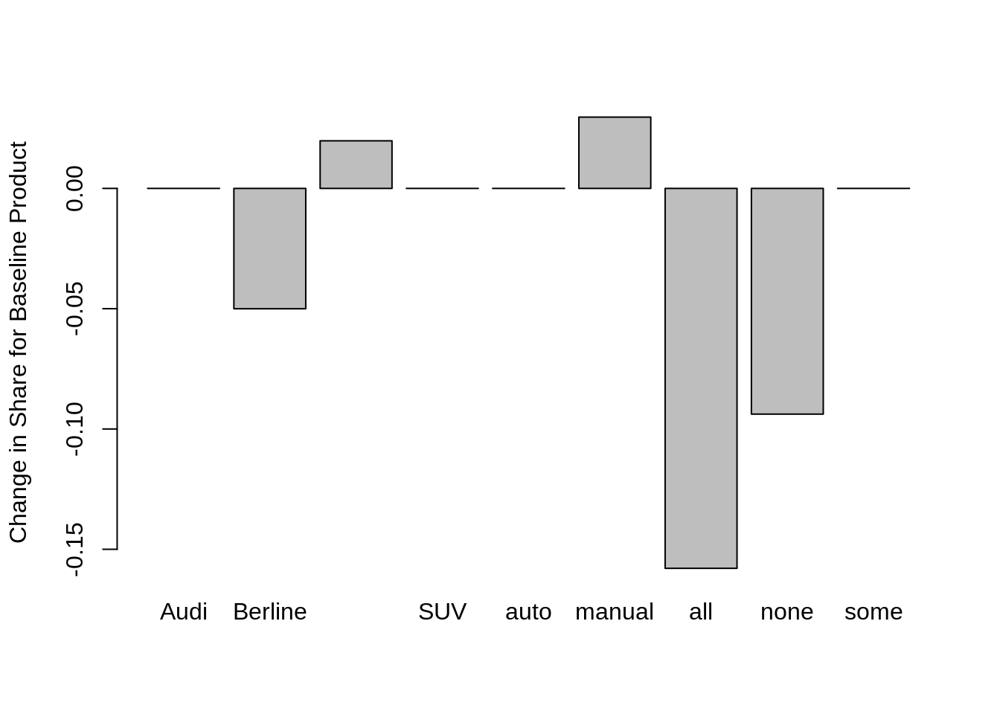

Read in the data
# all alternatives
x<-read.csv("input/19019700001_conjoint_choice_dat_X.csv")
# choice per display group
y<-read.csv("input/19019700001_conjoint_choice_dat_y.csv")
# demographic information
z<-read.csv("input/19019700001_conjoint_choice_dat_Z.csv")
colnames(z)[2:4] <- c("sex", "age", "perception")Transform the data into long format
choicesperquestions<-3
for (i in 1:nrow(y))
{
y[i,"y"]=(i-1)*choicesperquestions+y[i,"y"]
}
x$choice<-0
for (i in 1:nrow(y))
{
j=y[i,"y"]
x[j,"choice"]<-1
}
x$Profile<-NULL
alternative<-1
questioncounter<-1
x$ques<-0
x$alt<-0
lastid<-x[1,1]
for (i in 1:nrow(x))
{
if(x[i,1]!=lastid)
{
lastid=x[i,1]
questioncounter<-0
}
if(alternative<=choicesperquestions)
{
x[i,"ques"]<-questioncounter
x[i,"alt"]<-alternative
alternative<-alternative+1
}
else
{
questioncounter<-questioncounter+1
alternative<-1
x[i,"ques"]<-questioncounter
x[i,"alt"]<-alternative
alternative<-alternative+1
}
}
x[,"choice"] <- x[,"choice"] == 1
# merge a valid covariate here: in my case sex, age, perception.
x<-merge(x,z,by="ID",all.x=TRUE)
summary(x)## ID brand price type gear
## ID_10782: 18 Audi :298 Min. :15.00 berline :298 auto :452
## ID_10785: 18 BMW :285 1st Qu.:15.00 city_car:312 manual:448
## ID_10834: 18 Mercedes:317 Median :20.00 SUV :290
## ID_10835: 18 Mean :20.99
## ID_10836: 18 3rd Qu.:25.00
## ID_10841: 18 Max. :30.00
## (Other) :792
## options choice ques alt sex
## all :317 Mode :logical Min. :1.0 Min. :1 Female:486
## none:269 FALSE:600 1st Qu.:2.0 1st Qu.:1 Male :414
## some:314 TRUE :300 Median :3.5 Median :2
## Mean :3.5 Mean :2
## 3rd Qu.:5.0 3rd Qu.:3
## Max. :6.0 Max. :3
##
## age perception
## 18_24_years_old:702 Indifferent:108
## 25_34_years_old:162 Negative : 54
## 45_54_years_old: 18 Positive :738
## 55_64_years_old: 18
##
##
## Our data x is now in the long format so you can launch the first two solution methods
Let’s explore the data to see the choices for each possible alternative
# Price
xtabs(choice~price,data=x)## price
## 15 20 25 30
## 111 97 47 45# Brand
xtabs(choice~brand,data=x)## brand
## Audi BMW Mercedes
## 125 110 65# Type
xtabs(choice~type,data=x)## type
## berline city_car SUV
## 100 88 112# Gear
xtabs(choice~gear,data=x)## gear
## auto manual
## 147 153# Options
xtabs(choice~options,data=x)## options
## all none some
## 148 50 102Creation d’un model multinomial
car.mlogit <- mlogit.data(data=x, choice="choice", shape="long", alt.levels=paste("pos",1:3), id.var="ID")
m1<-mlogit(choice ~ 0 + brand + price + type + gear + options, data=car.mlogit)
summary(m1)##
## Call:
## mlogit(formula = choice ~ 0 + brand + price + type + gear + options,
## data = car.mlogit, method = "nr")
##
## Frequencies of alternatives:
## pos 1 pos 2 pos 3
## 0.35000 0.34667 0.30333
##
## nr method
## 4 iterations, 0h:0m:0s
## g'(-H)^-1g = 2.57E-07
## gradient close to zero
##
## Coefficients :
## Estimate Std. Error z-value Pr(>|z|)
## brandBMW 0.031020 0.182134 0.1703 0.8647653
## brandMercedes -0.972815 0.192012 -5.0664 4.053e-07 ***
## price -0.036602 0.014874 -2.4608 0.0138609 *
## typecity_car -0.315267 0.184744 -1.7065 0.0879124 .
## typeSUV 0.110474 0.193149 0.5720 0.5673474
## gearmanual 0.163265 0.157313 1.0378 0.2993458
## optionsnone -1.406673 0.206892 -6.7991 1.053e-11 ***
## optionssome -0.657057 0.175672 -3.7403 0.0001838 ***
## ---
## Signif. codes: 0 '***' 0.001 '**' 0.01 '*' 0.05 '.' 0.1 ' ' 1
##
## Log-Likelihood: -278.34Analyse: - Le type de transmission n’a pas d’impact significatif sur le choix d’une voiture - Marque: pas de différence significative entre Audi et BMW, mais par contre la “willingness to pay”" d’un client pour une Mercedes est plus faible de 26577.99 euros (faire apparaitre le calcul coef(m1)[“brandMercedes”]/coef(m1)[“price”] ) et préciser quece chiffre reflète certainement un biais d’échantillon - Price: le prix a un impact significatif sur le choix - Type: pas d’impact que ça soit une berline ou un SUV, par contre une city_car baisse la willingness to pay de 8613.325 euros (coef(m1)[“typecity_car”]/coef(m1)[“price”]) - Options: a un impact significatif
Maintenant essayons de prévoir les part de marché de BMW, Audi et Mercedes en fonction des caractéristiques de leurs voitures
predict.mnl <- function(model, data) {
# Function for predicting shares from a multinomial logit model
# model: mlogit object returned by mlogit()
# data: a data frame containing the set of designs for which you want to
# predict shares. Same format as the data used to estimate model.
data.model <- model.matrix(update(model$formula, 0 ~ .), data = data)[,-1]
utility <- data.model %*% model$coef#marix multiplication
share <- exp(utility)/sum(exp(utility))#convert set back to prob
cbind(share, data)
}
car0 <- c(brand="BMW", price=15, type="city_car", gear="manual", options="all")
car1 <- c(brand="BMW", price=20, type="SUV", gear="auto", options="some")
car2 <- c(brand="Mercedes", price=15, type="city_car", gear="manual", options="some")
car3 <- c(brand="Mercedes", price=20, type="Berline", gear="auto", options="none")
car4 <- c(brand="Audi", price=25, type="Berline", gear="manual", options="some")
car5 <- c(brand="Audi", price=25, type="SUV", gear="auto", options="some")
cars <- data.frame(rbind(car0, car1, car2, car3, car4, car5))
cars$price <- as.numeric(as.character(cars$price))
predict.mnl(m1, cars)## share brand price type gear options
## car0 0.36113778 BMW 15 city_car manual all
## car1 0.20268787 BMW 20 SUV auto some
## car2 0.06860514 Mercedes 15 city_car manual some
## car3 0.03142937 Mercedes 20 Berline auto none
## car4 0.17250519 Audi 25 Berline manual some
## car5 0.16363465 Audi 25 SUV auto some# create a grid with all possible design and select the ones we are interested in (in general the ones your company is offering)
#attrib<-list(seat=c("6","7","8"),cargo=c("2ft","3ft"),eng=c("gas","hyb","elec"),price=c("30","35","40"))
#total amount of combinations: 3*2*3*3=54
#(new.data<-expand.grid(attrib)[c(8,1,3,41,49,26),])#randomly pick a few combos as "real" market options
#predict.mnl(m3,new.data)sensitivity.mnl <- function(model, attrib, base.data, competitor.data) {
# Function for creating data for a share-sensitivity chart
# model: mlogit object returned by mlogit() function
# attrib: list of vectors with attribute levels to be used in sensitivity
# base.data: data frame containing baseline design of target product
# competitor.data: data frame contining design of competitive set
data <- rbind(base.data, competitor.data)
base.share <- predict.mnl(model, data)[1,1]
share <- NULL
for (a in seq_along(attrib)) {
for (i in attrib[[a]]) {
data[1,] <- base.data
data[1, a] <- i
share <- c(share, predict.mnl(model, data)[1,1])
}
}
data.frame(level=unlist(attrib), share=share, increase=share-base.share)
}
base.data <- data.frame(rbind(car5))
base.data$price <- as.numeric(as.character(base.data$price))
competitor.data <- data.frame(rbind(car0, car1, car2, car3, car4))
competitor.data$price <- as.numeric(as.character(competitor.data$price))
attrib<-list(brand=c("Audi"), price=levels(x$price), type=c("Berline", "city_car", "SUV"), gear=levels(x$gear), options=levels(x$options))
tradeoff <- sensitivity.mnl(m1, attrib, base.data, competitor.data)
barplot(tradeoff$increase, horiz=FALSE, names.arg=tradeoff$level,
ylab="Change in Share for Baseline Product")
#shows how share would change if we changed each of the attributes of the design one at a time in comparison to a existing alternative (8)m1.rpar <- rep("n", length=length(m1$coef))
names(m1.rpar) <- names(m1$coef)
m1.rpar## brandBMW brandMercedes price typecity_car typeSUV
## "n" "n" "n" "n" "n"
## gearmanual optionsnone optionssome
## "n" "n" "n"m1.hier <- mlogit(choice ~ 0 + brand + price + type + gear + options,data = car.mlogit, panel=TRUE, rpar = m1.rpar, correlation = FALSE)
#panel=true means multiple questions per respondent
#assume utilities are not correlated
summary(m1.hier)##
## Call:
## mlogit(formula = choice ~ 0 + brand + price + type + gear + options,
## data = car.mlogit, rpar = m1.rpar, correlation = FALSE, panel = TRUE)
##
## Frequencies of alternatives:
## pos 1 pos 2 pos 3
## 0.35000 0.34667 0.30333
##
## bfgs method
## 20 iterations, 0h:0m:1s
## g'(-H)^-1g = 8.87E-07
## gradient close to zero
##
## Coefficients :
## Estimate Std. Error z-value Pr(>|z|)
## brandBMW -0.141340 0.382180 -0.3698 0.7115125
## brandMercedes -1.880427 0.452820 -4.1527 3.286e-05 ***
## price -0.074748 0.024765 -3.0183 0.0025416 **
## typecity_car -0.868706 0.341033 -2.5473 0.0108568 *
## typeSUV -0.027631 0.304229 -0.0908 0.9276334
## gearmanual 0.142016 0.245891 0.5776 0.5635642
## optionsnone -2.446326 0.446654 -5.4770 4.326e-08 ***
## optionssome -1.179616 0.333729 -3.5347 0.0004083 ***
## sd.brandBMW 3.343293 0.605362 5.5228 3.336e-08 ***
## sd.brandMercedes -1.907095 0.659529 -2.8916 0.0038329 **
## sd.price 0.157275 0.045671 3.4436 0.0005740 ***
## sd.typecity_car 1.141074 0.594474 1.9195 0.0549249 .
## sd.typeSUV -0.458245 0.440335 -1.0407 0.2980268
## sd.gearmanual -0.453472 0.570572 -0.7948 0.4267492
## sd.optionsnone 0.964380 0.453196 2.1280 0.0333407 *
## sd.optionssome 0.598770 0.451827 1.3252 0.1850987
## ---
## Signif. codes: 0 '***' 0.001 '**' 0.01 '*' 0.05 '.' 0.1 ' ' 1
##
## Log-Likelihood: -240.07
##
## random coefficients
## Min. 1st Qu. Median Mean 3rd Qu. Max.
## brandBMW -Inf -2.3963567 -0.14133975 -0.14133975 2.11367718 Inf
## brandMercedes -Inf -3.1667432 -1.88042742 -1.88042742 -0.59411165 Inf
## price -Inf -0.1808282 -0.07474815 -0.07474815 0.03133193 Inf
## typecity_car -Inf -1.6383485 -0.86870576 -0.86870576 -0.09906300 Inf
## typeSUV -Inf -0.3367123 -0.02763088 -0.02763088 0.28145052 Inf
## gearmanual -Inf -0.1638463 0.14201573 0.14201573 0.44787773 Inf
## optionsnone -Inf -3.0967904 -2.44632565 -2.44632565 -1.79586093 Inf
## optionssome -Inf -1.5834804 -1.17961631 -1.17961631 -0.77575218 Infstdev(m1.hier)## brandBMW brandMercedes price typecity_car typeSUV
## 3.3432931 1.9070946 0.1572746 1.1410741 0.4582448
## gearmanual optionsnone optionssome
## 0.4534717 0.9643804 0.5987698# a lot of spread for the 8 seat choice: people prefer 6 but there are also a bunch of people going for 8
m2.hier <- update(m1.hier, correlation = TRUE)
summary(m2.hier)##
## Call:
## mlogit(formula = choice ~ 0 + brand + price + type + gear + options,
## data = car.mlogit, rpar = m1.rpar, correlation = TRUE, panel = TRUE)
##
## Frequencies of alternatives:
## pos 1 pos 2 pos 3
## 0.35000 0.34667 0.30333
##
## bfgs method
## 73 iterations, 0h:0m:4s
## g'(-H)^-1g = 8.45E-07
## gradient close to zero
##
## Coefficients :
## Estimate Std. Error z-value Pr(>|z|)
## brandBMW -4.771956 2.181775 -2.1872 0.028729 *
## brandMercedes -7.673303 2.547115 -3.0125 0.002591 **
## price -0.476457 0.184392 -2.5839 0.009768 **
## typecity_car -4.191112 1.430913 -2.9290 0.003401 **
## typeSUV 0.866159 1.349875 0.6417 0.521095
## gearmanual -0.756965 1.044386 -0.7248 0.468579
## optionsnone -10.187881 3.725127 -2.7349 0.006240 **
## optionssome -5.684459 2.146532 -2.6482 0.008092 **
## chol.brandBMW:brandBMW 13.907362 4.450911 3.1246 0.001780 **
## chol.brandBMW:brandMercedes 6.213414 2.125980 2.9226 0.003471 **
## chol.brandMercedes:brandMercedes 2.355313 1.048088 2.2472 0.024624 *
## chol.brandBMW:price 0.261955 0.161036 1.6267 0.103803
## chol.brandMercedes:price 0.411769 0.205912 1.9997 0.045529 *
## chol.price:price 0.765031 0.289769 2.6401 0.008287 **
## chol.brandBMW:typecity_car 2.507974 1.415890 1.7713 0.076510 .
## chol.brandMercedes:typecity_car 3.709622 1.351538 2.7447 0.006056 **
## chol.price:typecity_car 0.327405 1.161460 0.2819 0.778027
## chol.typecity_car:typecity_car 1.497134 1.171243 1.2782 0.201163
## chol.brandBMW:typeSUV -1.425859 1.402788 -1.0164 0.309417
## chol.brandMercedes:typeSUV -0.567335 0.908349 -0.6246 0.532248
## chol.price:typeSUV -3.184738 1.488060 -2.1402 0.032339 *
## chol.typecity_car:typeSUV 6.072453 2.366389 2.5661 0.010284 *
## chol.typeSUV:typeSUV 4.009631 1.675815 2.3926 0.016727 *
## chol.brandBMW:gearmanual 4.402714 1.896335 2.3217 0.020249 *
## chol.brandMercedes:gearmanual 0.518036 1.014872 0.5104 0.609740
## chol.price:gearmanual -3.581171 1.817547 -1.9703 0.048800 *
## chol.typecity_car:gearmanual 2.520850 1.090609 2.3114 0.020810 *
## chol.typeSUV:gearmanual -2.791864 1.157630 -2.4117 0.015878 *
## chol.gearmanual:gearmanual 0.023732 0.641781 0.0370 0.970502
## chol.brandBMW:optionsnone 3.005690 2.117791 1.4193 0.155824
## chol.brandMercedes:optionsnone 8.852976 3.476601 2.5464 0.010883 *
## chol.price:optionsnone 1.513542 1.712067 0.8840 0.376672
## chol.typecity_car:optionsnone -1.202248 1.299263 -0.9253 0.354794
## chol.typeSUV:optionsnone -4.029339 1.913599 -2.1056 0.035236 *
## chol.gearmanual:optionsnone 2.555794 1.476087 1.7315 0.083369 .
## chol.optionsnone:optionsnone 4.459679 1.875855 2.3774 0.017435 *
## chol.brandBMW:optionssome -0.196785 1.330955 -0.1479 0.882459
## chol.brandMercedes:optionssome 4.860703 1.679803 2.8936 0.003808 **
## chol.price:optionssome -1.663560 1.054357 -1.5778 0.114613
## chol.typecity_car:optionssome -1.122516 1.004996 -1.1169 0.264022
## chol.typeSUV:optionssome 2.693248 1.655914 1.6264 0.103856
## chol.gearmanual:optionssome 0.894194 1.087475 0.8223 0.410925
## chol.optionsnone:optionssome -0.304800 0.855937 -0.3561 0.721765
## chol.optionssome:optionssome 3.749933 1.822941 2.0571 0.039679 *
## ---
## Signif. codes: 0 '***' 0.001 '**' 0.01 '*' 0.05 '.' 0.1 ' ' 1
##
## Log-Likelihood: -201.15
##
## random coefficients
## Min. 1st Qu. Median Mean 3rd Qu. Max.
## brandBMW -Inf -14.152329 -4.7719556 -4.7719556 4.6084173 Inf
## brandMercedes -Inf -12.155185 -7.6733027 -7.6733027 -3.1914201 Inf
## price -Inf -1.088516 -0.4764575 -0.4764575 0.1356009 Inf
## typecity_car -Inf -7.383369 -4.1911123 -4.1911123 -0.9988560 Inf
## typeSUV -Inf -4.590514 0.8661588 0.8661588 6.3228317 Inf
## gearmanual -Inf -5.362638 -0.7569647 -0.7569647 3.8487082 Inf
## optionsnone -Inf -17.989892 -10.1878809 -10.1878809 -2.3858693 Inf
## optionssome -Inf -10.449083 -5.6844591 -5.6844591 -0.9198347 Infcov2cor(cov.mlogit(m2.hier))## brandBMW brandMercedes price typecity_car
## brandBMW 1.00000000 0.9350723 0.2886751 0.52990826
## brandMercedes 0.93507232 1.0000000 0.4307740 0.77332719
## price 0.28867505 0.4307740 1.0000000 0.56695891
## typecity_car 0.52990826 0.7733272 0.5669589 1.00000000
## typeSUV -0.17624789 -0.1896616 -0.4145810 0.06184429
## gearmanual 0.64476688 0.6297946 -0.2215955 0.48163010
## optionsnone 0.25984416 0.5142555 0.5326143 0.71374878
## optionssome -0.02785729 0.2178500 0.1056541 0.45800887
## typeSUV gearmanual optionsnone optionssome
## brandBMW -0.17624789 0.64476688 0.2598442 -0.02785729
## brandMercedes -0.18966162 0.62979458 0.5142555 0.21785004
## price -0.41458103 -0.22159553 0.5326143 0.10565412
## typecity_car 0.06184429 0.48163010 0.7137488 0.45800887
## typeSUV 1.00000000 0.16195868 -0.4016373 0.11904830
## gearmanual 0.16195868 1.00000000 0.2617994 -0.05635901
## optionsnone -0.40163728 0.26179940 1.0000000 0.38361609
## optionssome 0.11904830 -0.05635901 0.3836161 1.00000000#correlation between levels of seating: normal the respondent thinks it is an important factor when increasing/decreasing
# Simulating shares
predict.hier.mnl <- function(model, data, nresp=1000) {
# Function for predicting shares from a hierarchical multinomial logit model
# model: mlogit object returned by mlogit()
# data: a data frame containing the set of designs for which you want to
# predict shares. Same format at the data used to estimate model.
# Note that this code assumes all model parameters are random
data.model <- model.matrix(update(model$formula, 0 ~ .), data = data)[,-1]
coef.Sigma <- cov.mlogit(model)
coef.mu <- model$coef[1:dim(coef.Sigma)[1]]
draws <- mvrnorm(n=nresp, coef.mu, coef.Sigma)
shares <- matrix(NA, nrow=nresp, ncol=nrow(data))
for (i in 1:nresp) {
utility <- data.model%*%draws[i,]
share = exp(utility)/sum(exp(utility))
shares[i,] <- share
}
cbind(colMeans(shares), data)
}
predict.hier.mnl(m2.hier, data=cars)## colMeans(shares) brand price type gear options
## car0 0.37220162 BMW 15 city_car manual all
## car1 0.07487189 BMW 20 SUV auto some
## car2 0.01869100 Mercedes 15 city_car manual some
## car3 0.07776132 Mercedes 20 Berline auto none
## car4 0.08185875 Audi 25 Berline manual some
## car5 0.37461543 Audi 25 SUV auto some